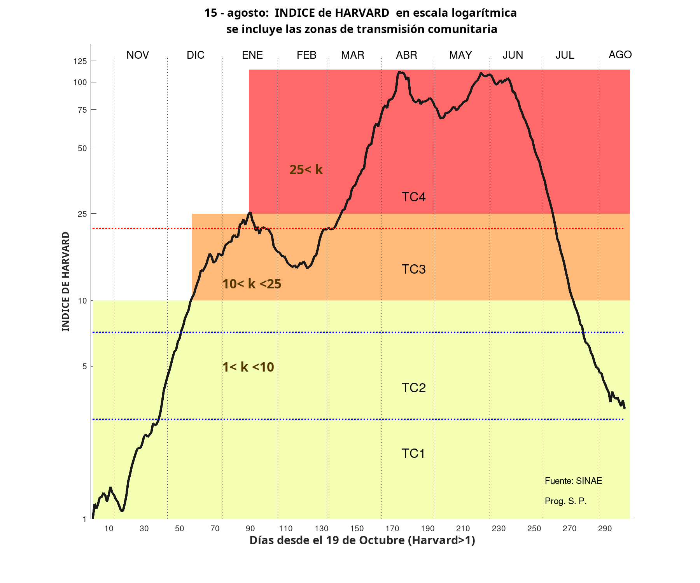

Notas acerca del Covid-19 en Uruguay [IR AL PRINCIPAL]
En construcción

Índice de Harvard al 15/08/21
=====>
Preocupados todos por la pandemia y
bombardeados a diario por cifras y modelos,
decidí en julio/2020 escribir una nota mensual para
viejos amigos, familia y vecinos.
Lego en Ciencias Biológicas y de la
Salud me propuse:
- presentar cifras objetivas de una manera estructurada pero al
mismo tiempo sencilla
y gráfica, excluyendo el lenguaje estadístico
- elegir los indicadores más significativos y
aceptados en la comunidad científica y aclarar la definición de
esos conceptos
Algunas de las notas
Transmisión Comunitaria: Criterio OMS
La Organización Mundial de la salud define Estados de Transmisión
Comunitaria donde TC4 es el último estadio.
Para evitar alarmas innecesarias la OMS propone índices muy
parsimoniosos.
Se define:
Mortalidad como el número de muertes
semanales atribuidas a COVID-19 por 100.000 habitantes,
promediadas a lo largo de un período de dos semanas. La
categorización es:
Mortalidad < 1
|
TC1
|
| 1 < Mortalidad <2 |
TC2
|
| 2 < Mortalidad <5 |
TC3
|
Mortalidad >5
|
TC4
|
Incidencia como la cantidad de nuevos
casos semanales confirmados por 100.000 habitantes, promediados a
lo largo de un período de dos semanas. La categorización es:
| Incidedencia < = 20 |
TC1
|
| 20 < Incidedencia <= 50 |
TC2
|
| 50 < Incidedencia <= 150 |
TC3
|
Incidedencia > 150
|
TC4
|
Comentarios al 20 de junio
El 7 de febrero, día del informe del GACH y sus recomendaciones,
Uruguay se encontraba en TC2 por mortalidad y en TC3 por
incidencia.
Al inicio de marzo la incidencia ingresa a TC4. Asimismo se
inicial la vacunación.
A mediados de marzo con la mortalidad ingresando a TC3 y la
incidencia transitando TC4 con un crecimiento exponencial, (ver
gráfico arriba del Índice de Harvard), el GACH y la comunidad
científica proponen al gobierno nuevas medidas de reducción de la
movilidad. Más precisamente se solicita que por un lapso de
3 a 4 semanas se aplique exactamente idénticas
medidas que las que ese mismo gobierno aplicó
un año atrás con éxito. La respuesta es por todos
conocida.
Desde el comienzo de abril se transita profundamente por
TC4 tanto en incidencia como en mortalidad figurando,
lamentablemente, en un lugar destacado en el mundo.
Recién en junio se presenta un descenso sostenido en ambos
índices, debido al esperado efecto de la vacunación.
Actualización al 15 de agosto
El tan esperado efecto de las vacunas se ha
hecho sentir en estos últimos dos meses. Se observa
en el gráfico del Índice de Harvard un
pronunciado decrecimiento exponencial con mayor pendiente aún
que los crecimientos del 1/nov -15 dic 2020 y el más grave, por
el número de casos, desde el 15/feb- 15/abril 2021. La
Incidencia que estaba en TC4 pasa por TC2 y se acerca a TC1. Más
pronunciado aún es el cambio en la Mortalidad donde Uruguay ya
se encuentra en TC1. Lamentablemente estos días hemos alcanzado
la cifra de 6000 muertos.
Uruguay y su entorno. Infectados y Vacunados: últimos 100 días.
Se consideran dos indicadores globales y dos de coyuntura.
Indicadores globales
- En el eje horizontal % de Infectados desde el inicio de la
pandemia
- En el eje vertical % de dosis
administradas desde el inicio de la vacunación
Indicadores de coyuntura
- El tamaño del símbolo es proporcional al Índice de Harvard
- El color del símbolo representa el tiempo para alcanzar
la inmunidad comunitaria (tomado de la página
https://timetoherd.com/ ) La escala de colores a la derecha
indica la cantidad de días.
Se compara Uruguay (UY) con Argentina (AR), Brasil (BR), Chile (CH),
Alemania (GR) y Estados Unidos (US).
Los segmentos asociados a cada país, unen los dos símbolos que
corresponden al 16 de marzo y el 24 de junio.
La pendiente de los segmentos indica la relación dosis por
infectado.
Respecto de los indicadores globales, (ubicación en el plano), un
país se encuentra en mejor situación que otro (dominación),
si su símbolo se encuentra más a la izquierda y más arriba.
Por ejemplo Chile y Alemania dominan a Brasil y Argentina, pero no
se dominan entre sí. Chile ha vacunado más pero tiene más
infectados.
Respecto de los indicadores locales, un país se encuentra en mejor
situación si el símbolo es más pequeño y el color se acerca más al
azul. Por ejemplo Chile domina a Estados Unidos, Argentina y Brasil.
Comentarios
- Uruguay con el mayor segmento (que atraviesa la figura de un
extremo al otro) se destaca por el mayor crecimento en
infectados y asimismo el mayor aumento en vacunación.
- Uruguay seguido de Estados Unidos y Argentina -en un entorno
del 10% - son los países con mayor penetración de la
pandemia.
- Uruguay, Argentina y Estados Unidos son los únicos con un
crecimiento sensible del Índice de Harvard.
Actualización: Uruguay y su entorno. Infectados y Vacunados:
últimos 152 días.
El gráfico actualizado presenta cambios importantes que merecen
comentarse:
- En el margen derecho del gráfico se
presentan los paises (Uruguay,
Estados Unidos y Argentina) con
mayor penetración de la pandemia, superior al 11%. Pero si se
comparan ambos gráficos, en el del 24/junio el área del
círculo de Uruguay (que simboliza el índice de Harvard), era
el mayor de todos y pasa a ser en el gráfico del 15/agosto
de los más pequeños indicando que la pandemia está bajo
control. No sucede así con Argentina y Estados Unidos cuyo
índice de Harvard aumentó, en especial en US con un
crecimiento considerable.
- Chile y Uruguay han superado la línea de 70
dosis por 100 habitantes (raya naranja punteada sobre el eje
vertical), número mágico de vacunados, que en realidad debería
ser 70 % luego de 15 días con dos dosis dadas para afirmar que
existe inmunidad comunitaria. Ambos paises seguidos de
Alemania (GR) con un 60%. Brasil y Argentina no llegan
al 45% de primeras dosis.
- Estados Unidos presenta el menor avance en
el periodo. Su símbolo se encuentra más a la derecha que todos
(mayor penetración de la pandemia), es el más grande (mayor Índice de Harvard ), el color del símbolo (días
para la inmunidad comunitaria) no ha cambiado en 5 meses y
aunque Biden prometió 70% de población vacunada para el 4 de
julio aún está muy lejos. Estados Unidos, con exceso de
vacunas y una formidable estructura sanitaria avanza
lentamente. La resistencia de los Republicanos y las
delirantes campañas
antivacunas han demostrado ser una rémora difícil de superar.
- Alemania(GR) presenta cifras notables: los
infectados no llegan al 5% de la población, tiene un 60% de
dosis dadas y su velocidad de vacunación es similar a la de
Uruguay y Chile.
- Argentina y Brasil presentan los peores
resultados, en especial Argentina. Ambos retrasados en la
vacunación y Argentina con un Índice
de Harvard que ha aumentado en estos 5 meses.
- La necesidad económica de estimular la
llegada de turistas de Argentina y Brasil en el cuarto
trimestre obliga a asumir el riesgo de
un retroceso en los buenos resultados obtenidos por Uruguay en
los últimos dos meses.